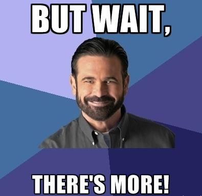

foundation.zurb.com
Mobile First
Semantic Markup
Library of JavaScript Plugins
So We Started Making Stuff
Navigation
Responsive Grid
Responsive Grid
Responsive Grid

Responsive Tables
Responsive Tables

“That sounds terrific and everything, but how can I possibly use these super amazing, technologically advanced components on MY sites and apps?”
The New Web Framework
Is Responsive
Is Modern
Is Whimsically Magically Magnificent

Built for New York State
Excelsior is
- collaborative
- platform agnostic
- cutting-edge
- open-source

Excelsior's Goal
To be the best Responsive Web Design Framework ever.
Leveraging talent across NYS agencies to collect, research and implement RWD best practices.
Some Key Features
An easy entry point for beginners
Flexible enough for advanced developers
Reusable, re-skinnable, accessible components and patterns
Ongoing state-wide collaboration effort to implement RWD
Excelsior is Not Another Standard
Excelsior isn't a locked code-base,
...it's essentially yours.
Excelsior Makes RWD Easy
All you need to know is HTML & CSS
Fully documented components
In-depth wiki

Outdated Techniques and Processes
"Just throw it on the website"
Desktop-first design, separate mobile sites
Plain, manually maintained CSS
Too many styles and Javascripts loaded on each page
Mismanaged source control
Emails and spreadsheets for bugs and changes
×
Were Treated Like The Evil Beasts They Are

YOU SHALL NOT PASS!

Hello, Modern Techniques and Processes
Content Based Design
Multi-Device & Mobile-First
Preprocessed CSS and Build tasks
Minified and Combined Assets
GitHub
GitHub Issues
...and it's easy to use!
What About Browser Support?
Fully functional in all major browsers
Chrome, Firefox, Opera, Safari
iPhone, Android, and Windows Phones
Internet Explorer 8 and Higher
Non-major browsers will still "work"
Serve IE6 & IE7 your mobile or print styles
Some People Might be Thinking...

"My sites MUST look identical across all browsers and fully support IE6 AND IE7!"
I've got three things to say about that:
1. Do you REALLY?
IE 6 is Dead

IE 6 = 0.15%
Source: StatCounter
IE 7 Isn't Far Behind
IE 7 = 0.74%
Source: StatCounter
2. Don't Shun the Future for the past
“Never put off tomorrow
what you can do today”
- Thomas Jefferson
Look Close, You'll See Something
IE Usage 2009-2013
Source: StatCounter
Mobile is Winning, Big
Mobile Usage 2009-2013
Source: StatCounter
3. If, After The Supporting Evidence...
After The Email Back and Forth...
After The...
Crying?

Add it to Excelsior Yourself!

RWD Doesn't Have to be Hard
Excelsior aims to help you start out on the right path
Don't reinvent the wheel again
Open-Source
Licensed without limitations, use, copy, modify, etc
Excelsior is People!
Contribute back, share your work with the world!
Add cool new features and components
Add support for legacy browsers
I Did Say "Pre-Beta", Right?
All code needs testing
How Do I get Started?


nys-its.github.io/go-responsive
Introductory Videos to RWD
nys-its.github.io/go-responsive/#get-started
Great Resource Links
nys-its.github.io/go-responsive/about-rwd.html
Component Showcase
nys-its.github.io/go-responsive/
Go Responsive
Today!
Thanks for Listening
Luke Charde
Department of Labor
Craig Patik
Department of Taxation & Finance
Eric Steinborn
Division of Criminal Justice Services
Questions?


 Photo credit:
Photo credit:  Photo credit:
Photo credit: